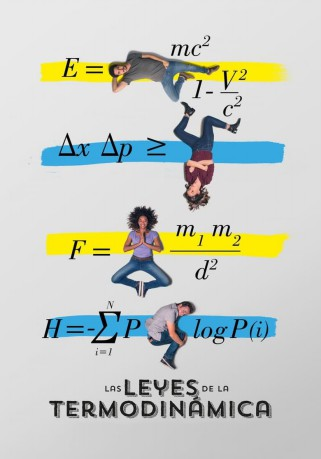
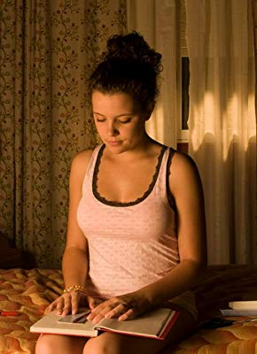
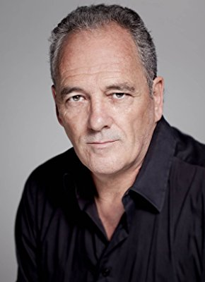

#9457 Die Gesetze der Thermodynamik
Alternativ: The Laws of Thermodynamics (Englischer Titel)
 
 IMDB-Wertung: 6.0 / 10
IMDB-Wertung: 6.0 / 10  Metascore: 45
Metascore: 45 
In The Laws of Thermodynamics wird der Erzählstruktur einer klassischen Rom-Com ein neuer, wissenschaftlicher Sinn zugeordnet, indem Liebe mit thermodynamischen und physikalischen Funktionsweisen erklärt wird. Das Resultat: ein Film, der sowohl das Herz, als auch das Gehirn anspricht. Als der Astrophysiker Manel mit der schönen Elena buchstäblich zusammenstößt, funkt es augenblicklich. Doch ist ihr Treffen eine Weisung des Schicksals oder eine physikalisch bedingte, chemische Reaktion? Im weiteren Verlauf ihrer Liebschaft versucht Manel sein Liebesleben mit seinen wissenschaftlichen Theorien zu erklären und so seinen Emotionen einen rationalen Sinn zuzuordnen. Doch kann eine solche Verwissenschaftlichung der Liebe überhaupt funktionieren?
Jahr: 2018
Dauer: 100 Minuten
FSK:
Land: Spanien Studio: NetflixTonspuren: - , - ,
Untertitel: Deutsch, Englisch,
Auflösung: 1080p (1920x1080) Größe: 4904 MB
Genre: Komödie
Regisseur: Mateo Gil
Drehbuch: Mateo Gil
Soundtrack: Fernando Velázquez
Darsteller:
- Vito Sanz als Manel
- Berta Vázquez als Elena
- Chino Darín als Pablo
- Irene Escolar als Raquel
- Josep Maria Pou als Profesor Amat
-  Andrea Ros als Alba
- Daniel Sánchez Arévalo als Daniel Sánchez Arévalo
- Txell Aixendri als Enfermera
-  Carlos Olalla als Psicólogo
- Albert Baró als Alumno 2
- Cristian Valencia als Chico Producción (Cortometraje)
- Aida de Sàrraga als Secretaria Pablo
- Annick Weerts als Amiga Elena
- Karina Matas Piper als Chica que Saluda (Boda)
- Juan Betancourt als Lorenzo
- Vicky Luengo als Eva
- Alicia Medina als Modelo Anuncio
- Marta Aguilar als Chica Orgullo
- José Javier Domínguez als Camarero
- Artur Busquets als Alumno 1
- Iván Noda als Iván
- Anna Gonzalvo als Chica Producción (Sesión Fotográgica)
- Blanca Martínez als Secretaria Eva
- Sol Lasta als Hermana Pablo
- Ana María Richards als Madre Pablo
- Moisés Aznar als Chico con Mechero
- Joan Villaro als Tipo Enorme (Disco)
- David Long als Tipo Enjuto (Disco)
- Romain Le Gat als Tipo Peligroso (Disco)
- Alexis Noguerol als Cameraman (Largometraje)
- Fred Plocque-Santos als Ayudante Vestuario (Largometraje)
- Clàudia Font als Ayudante Sonido (Largometraje)
- Elias Andersson als Maquillador (Largometraje)
- Andrea Bennett als Chica club
- Paco Moreno als Tipo Alejado (Disco)
- Jéssica Ross als Chica Club
- David Martín Surroca als Transeúnte
- Katharine Blundell als Ella misma - Científica
- Stephen Blundell als Él mismo - Científico
- Celine Boehm als Ella misma - Científica
- Phil Charles als Él mismo - Científico
- Romano Corradi als Él mismo - Científico
- Denise Gonçalves als Él mismo - Científico
- Mathieu Langer als Él mismo - Científico
- Antonio Mampaso als Él mismo - Científico
- Tariq Shahbaz als Él mismo - Científico
- Licia Verde als Ella misma - Científica
- Eva Villaver als Ella misma - Científica
- Efrain Anglès als Transeúnte (uncredited)
Datei: X:\2018(G-M)\Gesetze der Thermodynamik, Die (2018, FSK, 1920x1080).mkv seit 03.09.2018
Festplatte: HD 2018(G-Z)-2019(A-Z)
 Es gibt insgesamt 138 Filme in der Gruppe '2018(G-M)'
Es gibt insgesamt 138 Filme in der Gruppe '2018(G-M)'